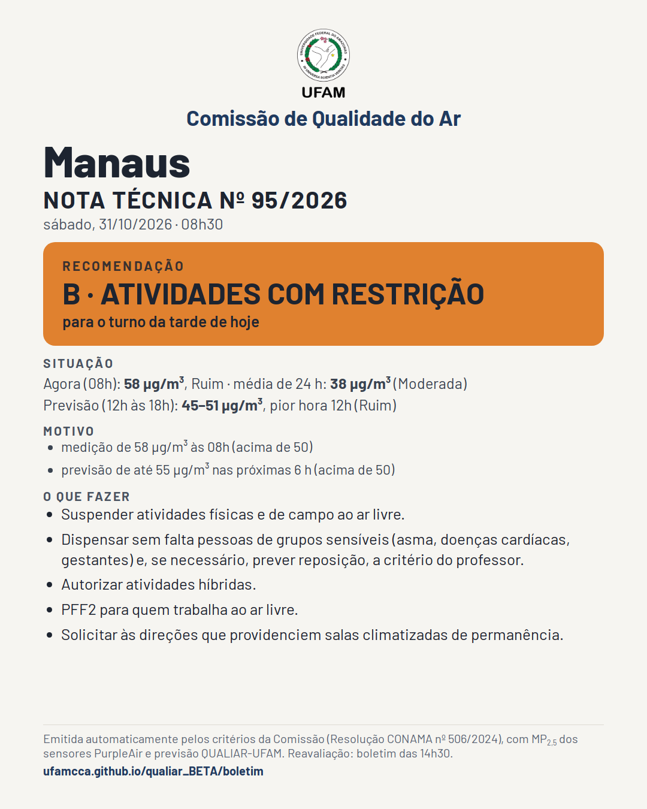
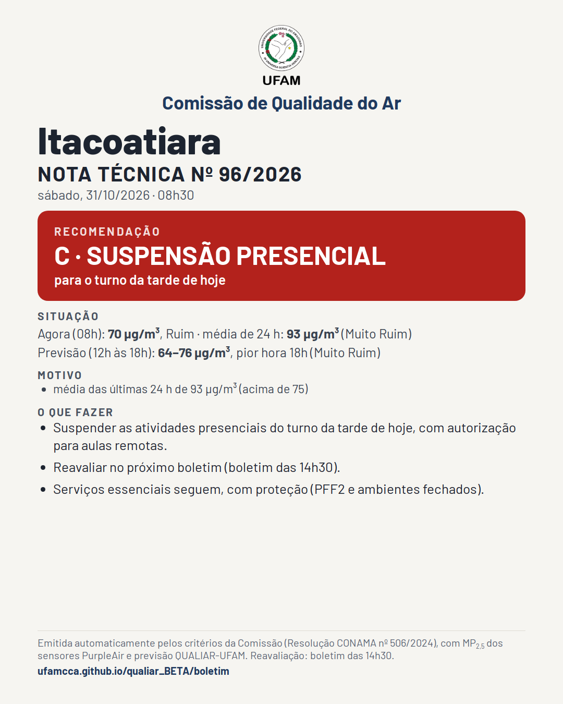
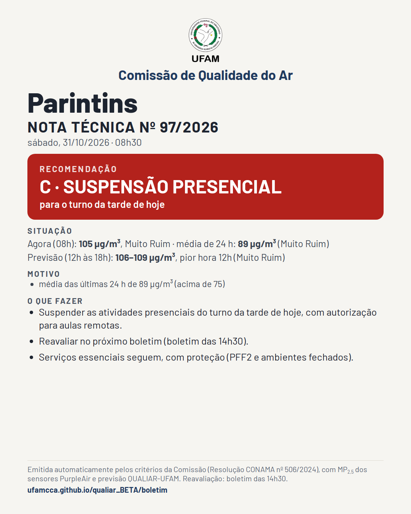
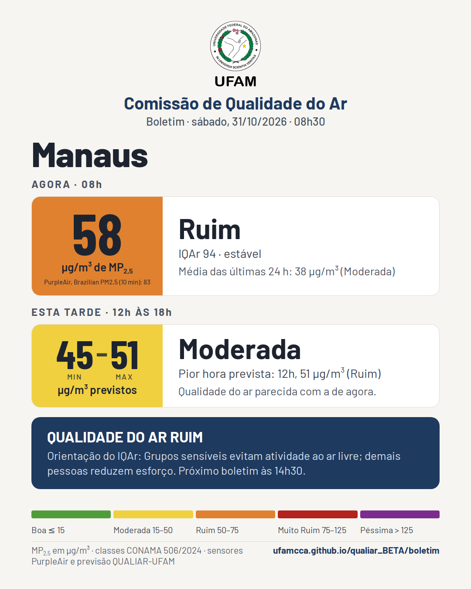
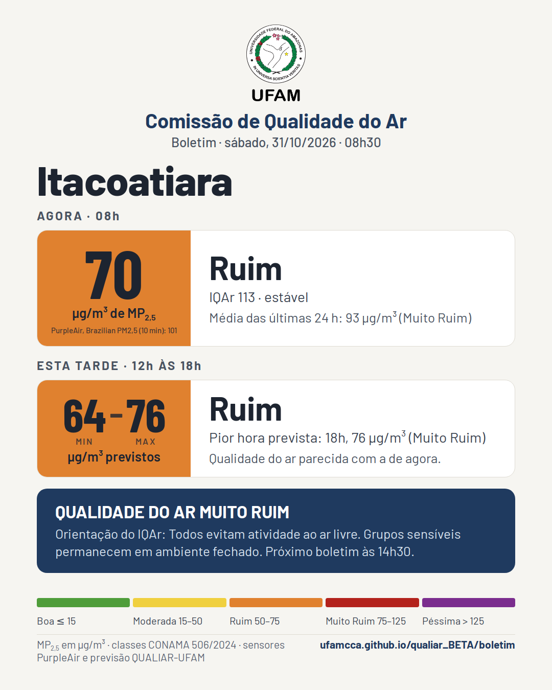
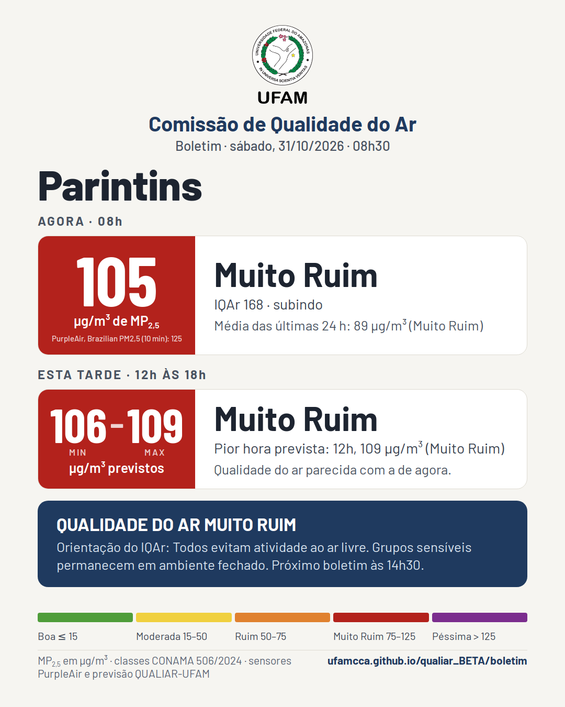
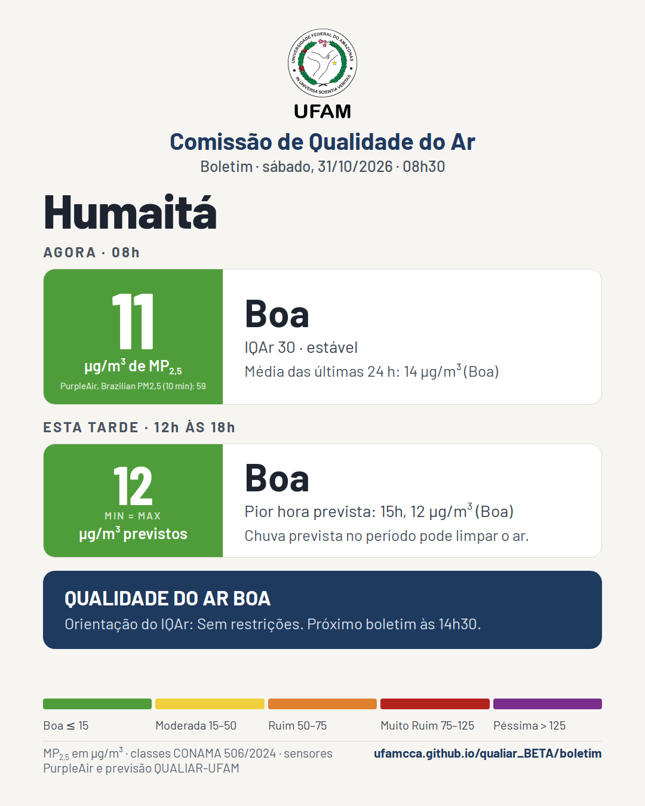
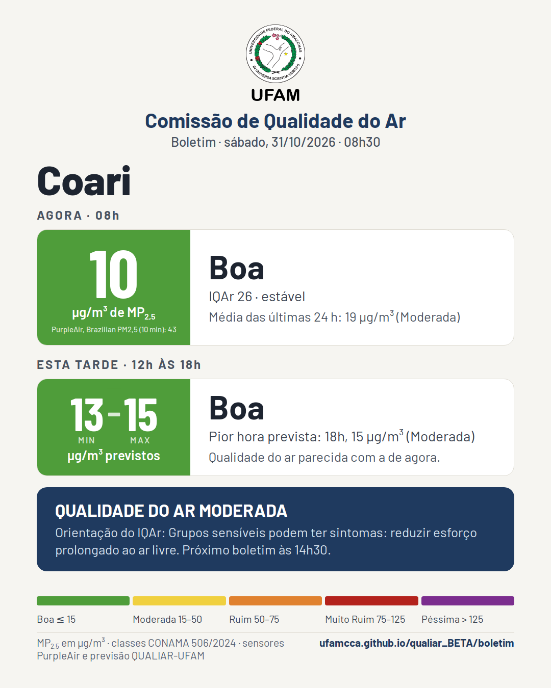
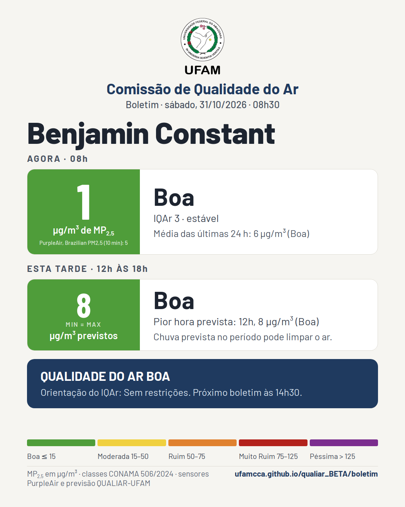

Boletim da qualidade do ar
Comissão de Qualidade do Ar da UFAM · edição de sábado, 31/10/2026, 08h30 · previsão hora a hora no QUALIAR-UFAM
Notas técnicas desta edição






Boletim












A Comissão emite nota técnica para a cidade só quando a recomendação é B (atividades com restrição) ou C (suspensão presencial). Valores de material particulado fino (MP2,5) em µg/m³, mediana dos sensores PurpleAir de cada cidade (correção EPA), classes da Resolução CONAMA nº 506/2024. A previsão é a versão publicada do modelo QUALIAR-UFAM. Boletins às 20h30, 02h30, 08h30 e 14h30. Toque na imagem para abrir em tamanho cheio e compartilhar.
Boletins anteriores
- 31/10/2026 08h30 · Manaus: agora 58 (Ruim) → 45–51 (Moderada) · Itacoatiara: agora 70 (Ruim) → 64–76 (Ruim) · Parintins: agora 105 (Muito Ruim) → 106–109 (Muito Ruim) · Humaitá: agora 11 (Boa) → 12 (Boa) · Coari: agora 10 (Boa) → 13–15 (Boa) · Benjamin Constant: agora 1 (Boa) → 8 (Boa) · Nota 95/2026: Manaus, B · ATIVIDADES COM RESTRIÇÃO · Nota 96/2026: Itacoatiara, C · SUSPENSÃO PRESENCIAL · Nota 97/2026: Parintins, C · SUSPENSÃO PRESENCIAL
- 31/10/2026 02h30 · Manaus: agora 47 (Moderada) → 25–41 (Moderada) · Itacoatiara: agora 85 (Muito Ruim) → 52–64 (Ruim) · Parintins: agora 111 (Muito Ruim) → 91–116 (Muito Ruim) · Humaitá: agora 10 (Boa) → 13–17 (Moderada) · Coari: agora 13 (Boa) → 15–18 (Moderada) · Benjamin Constant: agora 6 (Boa) → 8 (Boa) · Nota 93/2026: Itacoatiara, C · SUSPENSÃO PRESENCIAL · Nota 94/2026: Parintins, C · SUSPENSÃO PRESENCIAL
- 30/10/2026 20h30 · Manaus: agora 29 (Moderada) → 24–34 (Moderada) · Itacoatiara: agora 103 (Muito Ruim) → 88–98 (Muito Ruim) · Parintins: agora 86 (Muito Ruim) → 136–168 (Péssima) · Humaitá: agora 13 (Boa) → 28–30 (Moderada) · Coari: agora 22 (Moderada) → 26–27 (Moderada) · Benjamin Constant: agora 8 (Boa) → 8–9 (Boa) · Nota 91/2026: Itacoatiara, C · SUSPENSÃO PRESENCIAL · Nota 92/2026: Parintins, C · SUSPENSÃO PRESENCIAL
- 30/10/2026 14h30 · Manaus: agora 8 (Boa) → 52–58 (Ruim) · Itacoatiara: agora 81 (Muito Ruim) → 78–86 (Muito Ruim) · Parintins: agora 94 (Muito Ruim) → 132–179 (Péssima) · Humaitá: agora 17 (Moderada) → 23–34 (Moderada) · Coari: agora 42 (Moderada) → 30–38 (Moderada) · Benjamin Constant: agora 6 (Boa) → 9–10 (Boa) · Nota 88/2026: Manaus, B · ATIVIDADES COM RESTRIÇÃO · Nota 89/2026: Itacoatiara, C · SUSPENSÃO PRESENCIAL · Nota 90/2026: Parintins, C · SUSPENSÃO PRESENCIAL
- 30/10/2026 08h30 · Manaus: agora 64 (Ruim) → 41–55 (Moderada) · Itacoatiara: agora 77 (Muito Ruim) → 70–80 (Muito Ruim) · Parintins: agora 262 (Péssima) → 236–249 (Péssima) · Humaitá: agora 14 (Boa) → 20–25 (Moderada) · Coari: agora 36 (Moderada) → 21–38 (Moderada) · Benjamin Constant: agora 4 (Boa) → 9 (Boa) · Nota 85/2026: Manaus, B · ATIVIDADES COM RESTRIÇÃO · Nota 86/2026: Itacoatiara, C · SUSPENSÃO PRESENCIAL · Nota 87/2026: Parintins, C · SUSPENSÃO PRESENCIAL
- 30/10/2026 02h30 · Manaus: agora 68 (Ruim) → 12–69 (Ruim) · Itacoatiara: agora 64 (Ruim) → 30–48 (Moderada) · Parintins: agora 225 (Péssima) → 211–278 (Péssima) · Humaitá: agora 46 (Moderada) → 36–41 (Moderada) · Coari: agora 18 (Moderada) → 18 (Moderada) · Benjamin Constant: agora 6 (Boa) → 8 (Boa) · Nota 82/2026: Manaus, B · ATIVIDADES COM RESTRIÇÃO · Nota 83/2026: Itacoatiara, C · SUSPENSÃO PRESENCIAL · Nota 84/2026: Parintins, C · SUSPENSÃO PRESENCIAL
- 29/10/2026 20h30 · Manaus: agora 64 (Ruim) → 30–63 (Ruim) · Itacoatiara: agora 71 (Ruim) → 20–41 (Moderada) · Parintins: agora 126 (Péssima) → 210–310 (Péssima) · Humaitá: agora 53 (Ruim) → 40–46 (Moderada) · Coari: agora 21 (Moderada) → 14–18 (Moderada) · Benjamin Constant: agora 7 (Boa) → 9–14 (Boa) · Nota 78/2026: Manaus, B · ATIVIDADES COM RESTRIÇÃO · Nota 79/2026: Itacoatiara, C · SUSPENSÃO PRESENCIAL · Nota 80/2026: Parintins, C · SUSPENSÃO PRESENCIAL · Nota 81/2026: Humaitá, B · ATIVIDADES COM RESTRIÇÃO
- 29/10/2026 14h30 · Manaus: agora 63 (Ruim) → 46–61 (Ruim) · Itacoatiara: agora 84 (Muito Ruim) → 50–84 (Muito Ruim) · Parintins: agora 90 (Muito Ruim) → 209–322 (Péssima) · Humaitá: agora 14 (Boa) → 15–16 (Moderada) · Coari: agora 19 (Moderada) → 24–25 (Moderada) · Benjamin Constant: agora 5 (Boa) → 8–9 (Boa) · Nota 75/2026: Manaus, B · ATIVIDADES COM RESTRIÇÃO · Nota 76/2026: Itacoatiara, C · SUSPENSÃO PRESENCIAL · Nota 77/2026: Parintins, C · SUSPENSÃO PRESENCIAL
- 29/10/2026 08h30 · Manaus: agora 63 (Ruim) → 50–68 (Ruim) · Itacoatiara: agora 86 (Muito Ruim) → 85–87 (Muito Ruim) · Parintins: agora 299 (Péssima) → 308–331 (Péssima) · Humaitá: agora 11 (Boa) → 11–12 (Boa) · Coari: agora 10 (Boa) → 18–20 (Moderada) · Benjamin Constant: agora 3 (Boa) → 8 (Boa) · Nota 72/2026: Manaus, B · ATIVIDADES COM RESTRIÇÃO · Nota 73/2026: Itacoatiara, C · SUSPENSÃO PRESENCIAL · Nota 74/2026: Parintins, C · SUSPENSÃO PRESENCIAL
- 29/10/2026 02h30 · Manaus: agora 48 (Moderada) → 53–58 (Ruim) · Itacoatiara: agora 78 (Muito Ruim) → 68–79 (Muito Ruim) · Parintins: agora 845 (Péssima) → 862–947 (Péssima) · Humaitá: agora 13 (Boa) → 11–13 (Boa) · Coari: agora 13 (Boa) → 16–18 (Moderada) · Benjamin Constant: agora 2 (Boa) → 9 (Boa) · Nota 69/2026: Manaus, B · ATIVIDADES COM RESTRIÇÃO · Nota 70/2026: Itacoatiara, C · SUSPENSÃO PRESENCIAL · Nota 71/2026: Parintins, C · SUSPENSÃO PRESENCIAL
- 28/10/2026 20h30 · Manaus: agora 58 (Ruim) → 70–72 (Ruim) · Itacoatiara: agora 79 (Muito Ruim) → 60–82 (Ruim) · Parintins: agora 121 (Muito Ruim) → 152–153 (Péssima) · Humaitá: agora 12 (Boa) → 15–16 (Moderada) · Coari: agora 18 (Moderada) → 20 (Moderada) · Benjamin Constant: agora 14 (Boa) → 10–13 (Boa) · Nota 66/2026: Manaus, B · ATIVIDADES COM RESTRIÇÃO · Nota 67/2026: Itacoatiara, C · SUSPENSÃO PRESENCIAL · Nota 68/2026: Parintins, C · SUSPENSÃO PRESENCIAL
- 28/10/2026 14h30 · Manaus: agora 65 (Ruim) → 70–74 (Ruim) · Itacoatiara: agora 79 (Muito Ruim) → 82–84 (Muito Ruim) · Parintins: agora 108 (Muito Ruim) → 115–122 (Muito Ruim) · Humaitá: agora 13 (Boa) → 15–17 (Moderada) · Coari: agora 34 (Moderada) → 28–34 (Moderada) · Benjamin Constant: agora 10 (Boa) → 10 (Boa) · Nota 63/2026: Manaus, C · SUSPENSÃO PRESENCIAL · Nota 64/2026: Itacoatiara, C · SUSPENSÃO PRESENCIAL · Nota 65/2026: Parintins, C · SUSPENSÃO PRESENCIAL
- 28/10/2026 08h30 · Manaus: agora 78 (Muito Ruim) → 73–76 (Ruim) · Itacoatiara: agora 77 (Muito Ruim) → 81–87 (Muito Ruim) · Parintins: agora 123 (Muito Ruim) → 142–146 (Péssima) · Humaitá: agora 14 (Boa) → 16–18 (Moderada) · Coari: agora 15 (Boa) → 12–14 (Boa) · Benjamin Constant: agora 7 (Boa) → 9–10 (Boa) · Nota 60/2026: Manaus, B · ATIVIDADES COM RESTRIÇÃO · Nota 61/2026: Itacoatiara, C · SUSPENSÃO PRESENCIAL · Nota 62/2026: Parintins, C · SUSPENSÃO PRESENCIAL
- 28/10/2026 02h30 · Manaus: agora 83 (Muito Ruim) → 65–76 (Ruim) · Itacoatiara: agora 86 (Muito Ruim) → 47–88 (Ruim) · Parintins: agora 113 (Muito Ruim) → 118–122 (Muito Ruim) · Humaitá: agora 33 (Moderada) → 42–43 (Moderada) · Coari: agora 12 (Boa) → 12 (Boa) · Benjamin Constant: agora 8 (Boa) → 8 (Boa) · Nota 57/2026: Manaus, B · ATIVIDADES COM RESTRIÇÃO · Nota 58/2026: Itacoatiara, C · SUSPENSÃO PRESENCIAL · Nota 59/2026: Parintins, C · SUSPENSÃO PRESENCIAL
- 27/10/2026 20h30 · Manaus: agora 84 (Muito Ruim) → 54–70 (Ruim) · Itacoatiara: agora 94 (Muito Ruim) → 54–103 (Ruim) · Parintins: agora 133 (Péssima) → 138–142 (Péssima) · Humaitá: agora 13 (Boa) → 26–27 (Moderada) · Coari: agora 38 (Moderada) → 34–38 (Moderada) · Benjamin Constant: agora 11 (Boa) → 11–12 (Boa) · Nota 54/2026: Manaus, B · ATIVIDADES COM RESTRIÇÃO · Nota 55/2026: Itacoatiara, C · SUSPENSÃO PRESENCIAL · Nota 56/2026: Parintins, C · SUSPENSÃO PRESENCIAL
- 27/10/2026 14h30 · Manaus: agora 50 (Ruim) → 30–40 (Moderada) · Itacoatiara: agora 86 (Muito Ruim) → 94–101 (Muito Ruim) · Parintins: agora 119 (Muito Ruim) → 101–110 (Muito Ruim) · Humaitá: agora 27 (Moderada) → 24–26 (Moderada) · Coari: agora 8 (Boa) → 8–9 (Boa) · Benjamin Constant: agora 10 (Boa) → 13–14 (Boa) · Nota 52/2026: Itacoatiara, C · SUSPENSÃO PRESENCIAL · Nota 53/2026: Parintins, C · SUSPENSÃO PRESENCIAL
- 27/10/2026 08h30 · Manaus: agora 28 (Moderada) → 24–27 (Moderada) · sem medição · Parintins: agora 74 (Ruim) → 86–96 (Muito Ruim) · Humaitá: agora 30 (Moderada) → 30–31 (Moderada) · Coari: agora 8 (Boa) → 9 (Boa) · Benjamin Constant: agora 9 (Boa) → 12–13 (Boa) · Nota 51/2026: Parintins, C · SUSPENSÃO PRESENCIAL
- 27/10/2026 02h30 · Manaus: agora 19 (Moderada) → 25–28 (Moderada) · sem medição · Parintins: agora 114 (Muito Ruim) → 134–138 (Péssima) · Humaitá: agora 22 (Moderada) → 30–32 (Moderada) · Coari: agora 9 (Boa) → 10–11 (Boa) · Benjamin Constant: agora 18 (Moderada) → 12–15 (Boa) · Nota 50/2026: Parintins, C · SUSPENSÃO PRESENCIAL
- 26/10/2026 20h30 · Manaus: agora 16 (Moderada) → 28–31 (Moderada) · sem medição · Parintins: agora 57 (Ruim) → 96–105 (Muito Ruim) · Humaitá: agora 12 (Boa) → 34–37 (Moderada) · Coari: agora 8 (Boa) → 12–14 (Boa) · Benjamin Constant: agora 9 (Boa) → 9–10 (Boa) · Nota 49/2026: Parintins, C · SUSPENSÃO PRESENCIAL
- 26/10/2026 14h30 · Manaus: agora 11 (Boa) → 18–35 (Moderada) · sem medição · Parintins: agora 70 (Ruim) → 82–103 (Muito Ruim) · Humaitá: agora 42 (Moderada) → 33–43 (Moderada) · Coari: agora 13 (Boa) → 15–19 (Moderada) · Benjamin Constant: agora 12 (Boa) → 14 (Boa) · Nota 48/2026: Parintins, C · SUSPENSÃO PRESENCIAL
- 26/10/2026 08h30 · Manaus: agora 16 (Moderada) → 49–68 (Ruim) · sem medição · Parintins: agora 149 (Péssima) → 75–122 (Muito Ruim) · Humaitá: agora 49 (Moderada) → 27–46 (Moderada) · Coari: agora 11 (Boa) → 12–16 (Boa) · Benjamin Constant: agora 9 (Boa) → 12–13 (Boa) · Nota 46/2026: Manaus, B · ATIVIDADES COM RESTRIÇÃO · Nota 47/2026: Parintins, C · SUSPENSÃO PRESENCIAL
- 26/10/2026 02h30 · Manaus: agora 60 (Ruim) → 11–27 (Moderada) · Itacoatiara: agora 109 (Muito Ruim) → 80–96 (Muito Ruim) · Parintins: agora 35 (Moderada) → 68–98 (Muito Ruim) · Humaitá: agora 45 (Moderada) → 43–44 (Moderada) · Coari: agora 25 (Moderada) → 28–29 (Moderada) · Benjamin Constant: agora 12 (Boa) → 10–14 (Boa) · Nota 43/2026: Manaus, B · ATIVIDADES COM RESTRIÇÃO · Nota 44/2026: Itacoatiara, C · SUSPENSÃO PRESENCIAL · Nota 45/2026: Parintins, C · SUSPENSÃO PRESENCIAL
- 25/10/2026 20h30 · Manaus: agora 50 (Ruim) → 40–50 (Moderada) · Itacoatiara: agora 129 (Péssima) → 86–102 (Muito Ruim) · Parintins: agora 76 (Muito Ruim) → 146–156 (Péssima) · Humaitá: agora 42 (Moderada) → 43 (Moderada) · Coari: agora 27 (Moderada) → 27 (Moderada) · Benjamin Constant: agora 15 (Moderada) → 16–19 (Moderada) · Nota 40/2026: Manaus, B · ATIVIDADES COM RESTRIÇÃO · Nota 41/2026: Itacoatiara, C · SUSPENSÃO PRESENCIAL · Nota 42/2026: Parintins, C · SUSPENSÃO PRESENCIAL
- 25/10/2026 14h30 · Manaus: agora 42 (Moderada) → 42–54 (Ruim) · Itacoatiara: agora 170 (Péssima) → 134–176 (Péssima) · Parintins: agora 25 (Moderada) → 71–123 (Muito Ruim) · Humaitá: agora 38 (Moderada) → 42–44 (Moderada) · Coari: agora 25 (Moderada) → 29–31 (Moderada) · Benjamin Constant: agora 10 (Boa) → 13 (Boa) · Nota 37/2026: Manaus, B · ATIVIDADES COM RESTRIÇÃO · Nota 38/2026: Itacoatiara, C · SUSPENSÃO PRESENCIAL · Nota 39/2026: Parintins, C · SUSPENSÃO PRESENCIAL
- 25/10/2026 08h30 · Manaus: agora 50 (Ruim) → 42–53 (Moderada) · Itacoatiara: agora 142 (Péssima) → 132–142 (Péssima) · Parintins: agora 110 (Muito Ruim) → 140–168 (Péssima) · Humaitá: agora 28 (Moderada) → 32–35 (Moderada) · Coari: agora 15 (Moderada) → 20–23 (Moderada) · Benjamin Constant: agora 5 (Boa) → 9 (Boa) · Nota 34/2026: Manaus, B · ATIVIDADES COM RESTRIÇÃO · Nota 35/2026: Itacoatiara, C · SUSPENSÃO PRESENCIAL · Nota 36/2026: Parintins, C · SUSPENSÃO PRESENCIAL
- 25/10/2026 02h30 · Manaus: agora 54 (Ruim) → 55–62 (Ruim) · Itacoatiara: agora 180 (Péssima) → 183–197 (Péssima) · Parintins: agora 121 (Muito Ruim) → 160–199 (Péssima) · Humaitá: agora 41 (Moderada) → 35–38 (Moderada) · Coari: agora 27 (Moderada) → 26–27 (Moderada) · Benjamin Constant: agora 9 (Boa) → 8–9 (Boa) · Nota 31/2026: Manaus, B · ATIVIDADES COM RESTRIÇÃO · Nota 32/2026: Itacoatiara, C · SUSPENSÃO PRESENCIAL · Nota 33/2026: Parintins, C · SUSPENSÃO PRESENCIAL
- 24/10/2026 20h30 · Manaus: agora 75 (Muito Ruim) → 58–116 (Ruim) · Itacoatiara: agora 106 (Muito Ruim) → 88–93 (Muito Ruim) · Parintins: agora 100 (Muito Ruim) → 290–337 (Péssima) · Humaitá: agora 48 (Moderada) → 40–48 (Moderada) · Coari: agora 52 (Ruim) → 43–48 (Moderada) · Benjamin Constant: agora 37 (Moderada) → 34–40 (Moderada) · Nota 26/2026: Manaus, B · ATIVIDADES COM RESTRIÇÃO · Nota 27/2026: Itacoatiara, C · SUSPENSÃO PRESENCIAL · Nota 28/2026: Parintins, C · SUSPENSÃO PRESENCIAL · Nota 29/2026: Humaitá, B · ATIVIDADES COM RESTRIÇÃO · Nota 30/2026: Coari, B · ATIVIDADES COM RESTRIÇÃO
- 24/10/2026 14h30 · Manaus: agora 61 (Ruim) → 50–60 (Ruim) · Itacoatiara: agora 69 (Ruim) → 68–69 (Ruim) · Parintins: agora 69 (Ruim) → 192–322 (Péssima) · Humaitá: agora 43 (Moderada) → 28–39 (Moderada) · Coari: agora 16 (Moderada) → 14–15 (Boa) · Benjamin Constant: agora 8 (Boa) → 10 (Boa) · Nota 23/2026: Manaus, B · ATIVIDADES COM RESTRIÇÃO · Nota 24/2026: Itacoatiara, B · ATIVIDADES COM RESTRIÇÃO · Nota 25/2026: Parintins, C · SUSPENSÃO PRESENCIAL
- 24/10/2026 08h30 · Manaus: agora 31 (Moderada) → 28–30 (Moderada) · Itacoatiara: agora 50 (Moderada) → 58–65 (Ruim) · Parintins: agora 291 (Péssima) → 286–319 (Péssima) · Humaitá: agora 10 (Boa) → 11–12 (Boa) · Coari: agora 16 (Moderada) → 15–16 (Moderada) · Benjamin Constant: agora 2 (Boa) → 9 (Boa) · Nota 21/2026: Itacoatiara, B · ATIVIDADES COM RESTRIÇÃO · Nota 22/2026: Parintins, C · SUSPENSÃO PRESENCIAL
- 24/10/2026 02h30 · Manaus: agora 43 (Moderada) → 44–48 (Moderada) · Itacoatiara: agora 37 (Moderada) → 56–78 (Ruim) · Parintins: agora 1057 (Péssima) → 928–1117 (Péssima) · Humaitá: agora 10 (Boa) → 11–12 (Boa) · Coari: agora 12 (Boa) → 10–11 (Boa) · Benjamin Constant: agora 1 (Boa) → 8 (Boa) · Nota 19/2026: Itacoatiara, C · SUSPENSÃO PRESENCIAL · Nota 20/2026: Parintins, C · SUSPENSÃO PRESENCIAL
- 23/10/2026 20h30 · Manaus: agora 17 (Moderada) → 17–18 (Moderada) · Itacoatiara: agora 58 (Ruim) → 90–99 (Muito Ruim) · Parintins: agora 73 (Ruim) → 168–185 (Péssima) · Humaitá: agora 14 (Boa) → 14 (Boa) · Coari: agora 11 (Boa) → 9–10 (Boa) · Benjamin Constant: agora 1 (Boa) → 8 (Boa) · Nota 17/2026: Itacoatiara, C · SUSPENSÃO PRESENCIAL · Nota 18/2026: Parintins, C · SUSPENSÃO PRESENCIAL
- 23/10/2026 14h30 · Manaus: agora 16 (Moderada) → 17–18 (Moderada) · Itacoatiara: agora 65 (Ruim) → 79–95 (Muito Ruim) · Parintins: agora 37 (Moderada) → 98–162 (Péssima) · Humaitá: agora 14 (Boa) → 15–16 (Moderada) · Coari: agora 9 (Boa) → 9 (Boa) · Benjamin Constant: agora 2 (Boa) → 9 (Boa) · Nota 15/2026: Itacoatiara, C · SUSPENSÃO PRESENCIAL · Nota 16/2026: Parintins, C · SUSPENSÃO PRESENCIAL
- 23/10/2026 08h30 · Manaus: agora 18 (Moderada) → 17–43 (Moderada) · Itacoatiara: agora 206 (Péssima) → 130–167 (Péssima) · Parintins: agora 85 (Muito Ruim) → 119–150 (Péssima) · Humaitá: agora 10 (Boa) → 10–11 (Boa) · Coari: agora 7 (Boa) → 8 (Boa) · Benjamin Constant: agora 0 (Boa) → 8 (Boa) · Nota 13/2026: Itacoatiara, C · SUSPENSÃO PRESENCIAL · Nota 14/2026: Parintins, C · SUSPENSÃO PRESENCIAL
- 23/10/2026 02h30 · Manaus: agora 13 (Boa) → 15–17 (Moderada) · Itacoatiara: agora 55 (Ruim) → 62–79 (Muito Ruim) · Parintins: agora 744 (Péssima) → 715–826 (Péssima) · Humaitá: agora 13 (Boa) → 13–14 (Boa) · Coari: agora 6 (Boa) → 8 (Boa) · Benjamin Constant: agora 1 (Boa) → 8 (Boa) · Nota 11/2026: Itacoatiara, B · ATIVIDADES COM RESTRIÇÃO · Nota 12/2026: Parintins, C · SUSPENSÃO PRESENCIAL
- 22/10/2026 20h30 · Manaus: agora 17 (Moderada) → 16 (Moderada) · Itacoatiara: agora 43 (Moderada) → 55–69 (Ruim) · Parintins: agora 62 (Ruim) → 94–95 (Muito Ruim) · Humaitá: agora 16 (Moderada) → 14–16 (Moderada) · Coari: agora 8 (Boa) → 10 (Boa) · Benjamin Constant: agora 10 (Boa) → 15 (Boa) · Nota 9/2026: Itacoatiara, B · ATIVIDADES COM RESTRIÇÃO · Nota 10/2026: Parintins, B · ATIVIDADES COM RESTRIÇÃO
- 22/10/2026 14h30 · Manaus: agora 23 (Moderada) → 20 (Moderada) · Itacoatiara: agora 11 (Boa) → 19–27 (Moderada) · Parintins: agora 25 (Moderada) → 50–70 (Ruim) · Humaitá: agora 9 (Boa) → 8–9 (Boa) · Coari: agora 11 (Boa) → 11–12 (Boa) · Benjamin Constant: agora 1 (Boa) → 8–9 (Boa) · Nota 8/2026: Parintins, B · ATIVIDADES COM RESTRIÇÃO
- 22/10/2026 08h30 · Manaus: agora 10 (Boa) → 13–17 (Moderada) · Itacoatiara: agora 75 (Muito Ruim) → 70–79 (Ruim) · Parintins: agora 41 (Moderada) → 49–62 (Ruim) · Humaitá: agora 33 (Moderada) → 22–32 (Moderada) · Coari: agora 5 (Boa) → 9–10 (Boa) · Benjamin Constant: agora 0 (Boa) → 8 (Boa) · Nota 6/2026: Itacoatiara, B · ATIVIDADES COM RESTRIÇÃO · Nota 7/2026: Parintins, B · ATIVIDADES COM RESTRIÇÃO
- 22/10/2026 02h30 · Manaus: agora 12 (Boa) → 20–26 (Moderada) · Itacoatiara: agora 27 (Moderada) → 30–33 (Moderada) · Parintins: agora 133 (Péssima) → 154–164 (Péssima) · Humaitá: agora 1 (Boa) → 8 (Boa) · Coari: agora 6 (Boa) → 9–10 (Boa) · Benjamin Constant: agora 5 (Boa) → 8 (Boa) · Nota 5/2026: Parintins, C · SUSPENSÃO PRESENCIAL
- 21/10/2026 20h30 · Manaus: agora 31 (Moderada) → 14–28 (Moderada) · Itacoatiara: agora 18 (Moderada) → 28–34 (Moderada) · Parintins: agora 234 (Péssima) → 273–305 (Péssima) · Humaitá: agora 1 (Boa) → 10 (Boa) · Coari: agora 6 (Boa) → 15–16 (Moderada) · Benjamin Constant: agora 6 (Boa) → 8 (Boa) · Nota 4/2026: Parintins, C · SUSPENSÃO PRESENCIAL
- 21/10/2026 14h30 · Manaus: agora 28 (Moderada) → 28–29 (Moderada) · Itacoatiara: agora 29 (Moderada) → 38–44 (Moderada) · Parintins: agora 18 (Moderada) → 47–87 (Ruim) · Humaitá: agora 0 (Boa) → 13–14 (Boa) · Coari: agora 9 (Boa) → 24–26 (Moderada) · Benjamin Constant: agora 7 (Boa) → 8–9 (Boa) · Nota 3/2026: Parintins, C · SUSPENSÃO PRESENCIAL
- 21/10/2026 08h30 · Manaus: agora 24 (Moderada) → 28–32 (Moderada) · Itacoatiara: agora 46 (Moderada) → 42–46 (Moderada) · Parintins: agora 35 (Moderada) → 42–70 (Ruim) · Humaitá: agora 14 (Boa) → 10–14 (Boa) · Coari: agora 16 (Moderada) → 10–14 (Boa) · Benjamin Constant: agora 8 (Boa) → 8 (Boa) · Nota 2/2026: Parintins, C · SUSPENSÃO PRESENCIAL
- 21/10/2026 02h30 · Manaus: agora 22 (Moderada) → 9–23 (Boa) · sem medição · Parintins: agora 245 (Péssima) → 83–167 (Péssima) · Humaitá: agora 13 (Boa) → 15–16 (Moderada) · sem medição · Benjamin Constant: agora 8 (Boa) → 8 (Boa)
- 20/10/2026 20h30 · Manaus: agora 23 (Moderada) → 9–29 (Boa) · sem medição · Parintins: agora 46 (Moderada) → 22–42 (Moderada) · Humaitá: agora 15 (Boa) → 18 (Moderada) · sem medição · Benjamin Constant: agora 9 (Boa) → 8 (Boa)